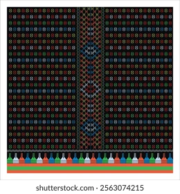

Kain Songke Manggarai
Songke atau Towe Songke merupakan kain tenun yang menjadi bagian dari budaya masyarakat Manggarai. Kain ini memiliki berbagai motif dengan karakter visual dan makna simbolis yang berkaitan dengan nilai-nilai kehidupan masyarakat.
Dalam portofolio ini, karakter visual Songke digunakan secara selektif sebagai inspirasi untuk pola, divider, background, dan elemen grafis. Penggunaan motif tidak dimaksudkan untuk memenuhi seluruh tampilan website, tetapi untuk memberikan identitas budaya yang tetap modern dan profesional.